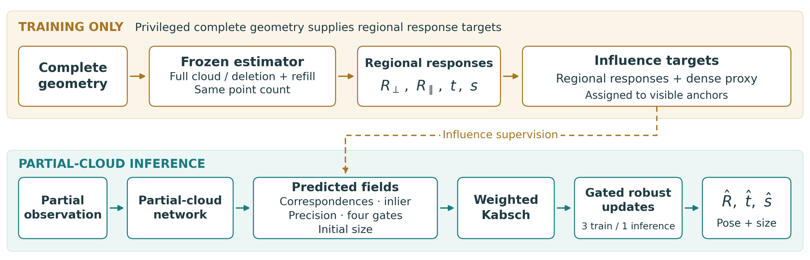
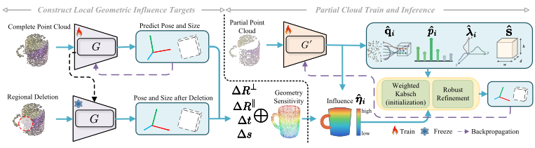
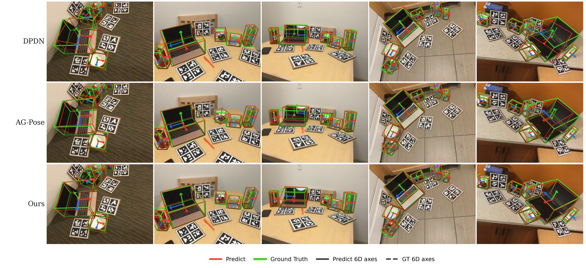
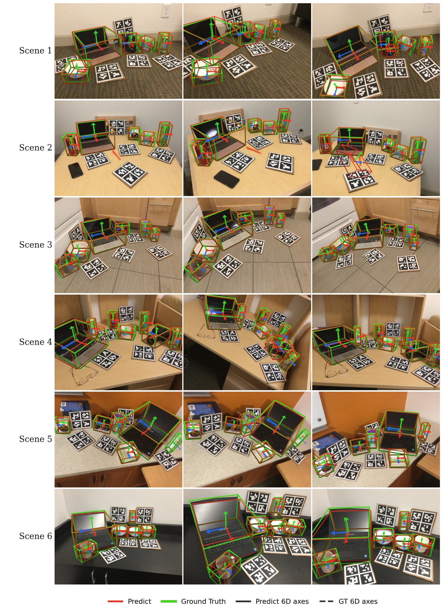

Anonymous submission
InfluPose
Learning State-Conditioned Geometric Influence
for Category-Level Object Pose Estimation
Learn how local geometry affects the recovered state.
Estimate pose and size from a single partial point cloud.

Complete geometry teaches regional influence. Partial geometry is sufficient at inference.
The idea
Which regions change the estimate?
Category-level pose estimation recovers the rotation, translation, and metric size of unseen objects from partial depth observations. The effect of a region on that recovered state depends on the surrounding geometry and the estimator, as well as local correspondence quality.
InfluPose learns state-conditioned geometric influence. During training, a frozen complete-cloud estimator processes intact geometry and clouds formed by regional deletion and refill. The resulting state changes, combined with a dense geometric proxy, supervise influence predictions from partial observations. Correspondences, reliability, influence, and initial size then enter a deterministic geometric solver.
Complete geometry and regional probes are used only during training. At inference, the partial-cloud network recovers a single pose and metric box.
Method
Training and inference
A frozen complete-cloud estimator supplies training targets for the partial-cloud predictor.

Quantitative results
Pose and size on REAL275
Paper-reported mAP (%). Higher is better.
Stage 2 uses 15,576 detector inputs.
5° / 2 cm · Stage 2
Pose and metric size from partial point clouds.
Checkpoints can be used with the evaluation and inference scripts.
| Setting | 5° / 2 cm | 5° / 5 cm | 10° / 2 cm | 10° / 5 cm | IoU50 | IoU75 |
|---|---|---|---|---|---|---|
| InfluPose (Full) | 57.73 | 62.69 | 75.27 | 81.56 | 82.13 | 76.58 |
REAL275 results reported in the paper. Inference uses one partial-cloud predictor pass, weighted Kabsch initialization, and one robust-refinement update.
Qualitative results
Recovering objects in real scenes
Archived REAL275 visualizations from the project experiments.

More scenes
